HIST 270 · History of China · Chapter 14 · Lecture 3
One Life Through the Ming World
Wang Yangming in the Exam Hall, in Exile, and in the Villages
1370s–1600 · Study Buddy edition
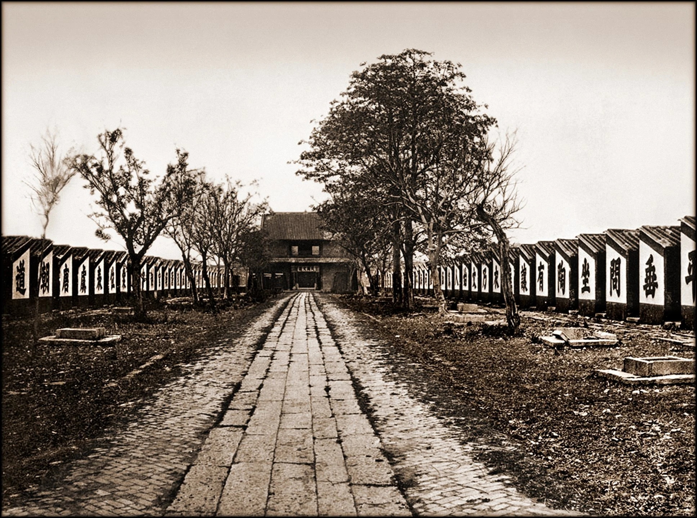
Examination hall with about 7,500 cells, Canton (Guangzhou), 1873, photographer unknown; restored by Flickr user "ralph repo." A Qing-era photo of the same kind of exam compound the Ming built. CC BY 2.0, Wikimedia Commons.
Q7 story · Across the empire · 1370s–1500s
The Ming Made the Examinations the Most Prestigious Road to Office Again
Under the Yuan dynasty, examinations had played only a tiny part in choosing officials.
Under the Ming, passing the exams again became the most respected way into government.
Educated men eagerly sought office even though emperors often treated officials harshly.
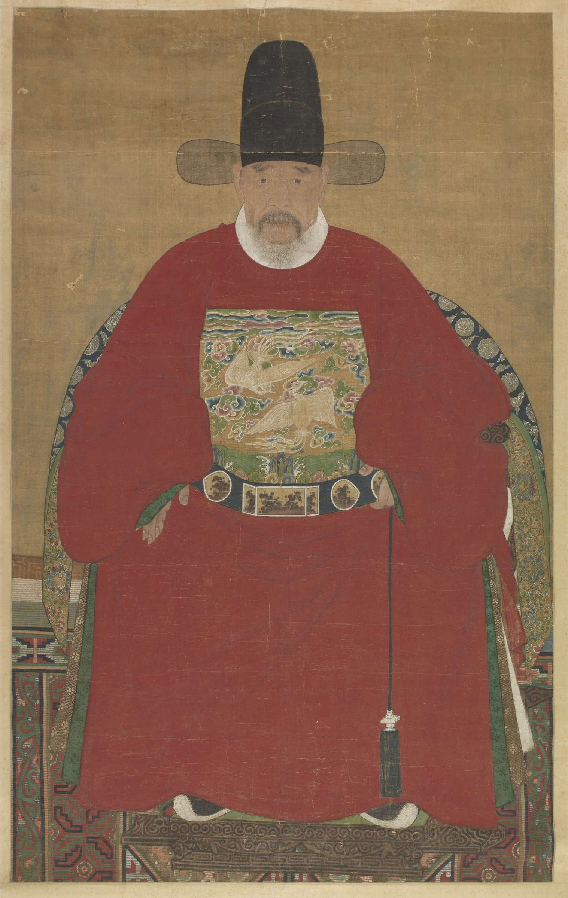
Portrait of an Elderly Unidentified Civil Official, Ming dynasty, late 16th century. Hanging scroll, ink and colors on silk. Freer Gallery of Art, Smithsonian. Public domain, Wikimedia Commons.
Sources: Ebrey, Ch. 14, p. 234. Portrait: Freer Gallery of Art record via Wikimedia Commons.
Q7 recap · The exam video · Ming scale
You Saw the Exam System in the Video, and the Ming Ran It on a Huge Scale
You saw this in the civil service exam video earlier in the semester: the three degrees, the cells, the searches and the recopied papers (watch again ↗).
In each Ming provincial capital, five to ten thousand candidates sat the exam, and a man caught in a cheat-sheet gown was thrown out.
By 1500 China had about 30,000 shengyuan who had to keep retesting, so for most of them exams became a way of life.
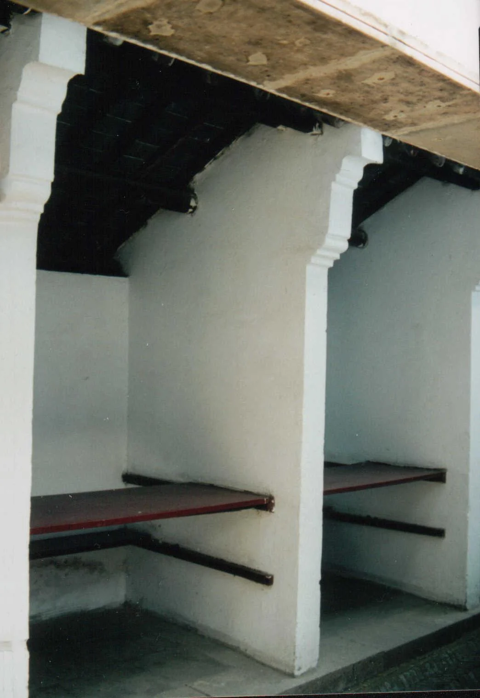
Reconstructed examination cells at the Jiangnan Examination Hall (Jiangnan Gongyuan), Nanjing. Photo: Dr. Meierhofer, 2001. CC BY-SA 3.0, Wikimedia Commons.
Sources: Ebrey, Ch. 14, pp. 236–237; "China's Examination Hell: Video Lecture" (S. Austin, 2013), YouTube.
Q7 · Q8 story · The classroom · 1300s–1500s
Every Candidate Studied Zhu Xi's Explanations of the Four Books
The Four Books, as explained by the Song thinker Zhu Xi, were the official course of study.
Zhu Xi's teachings were treated as orthodox, meaning the officially correct version of Confucianism.
Because Zhu Xi thought poetry did nothing for moral growth, the poetry test was dropped.
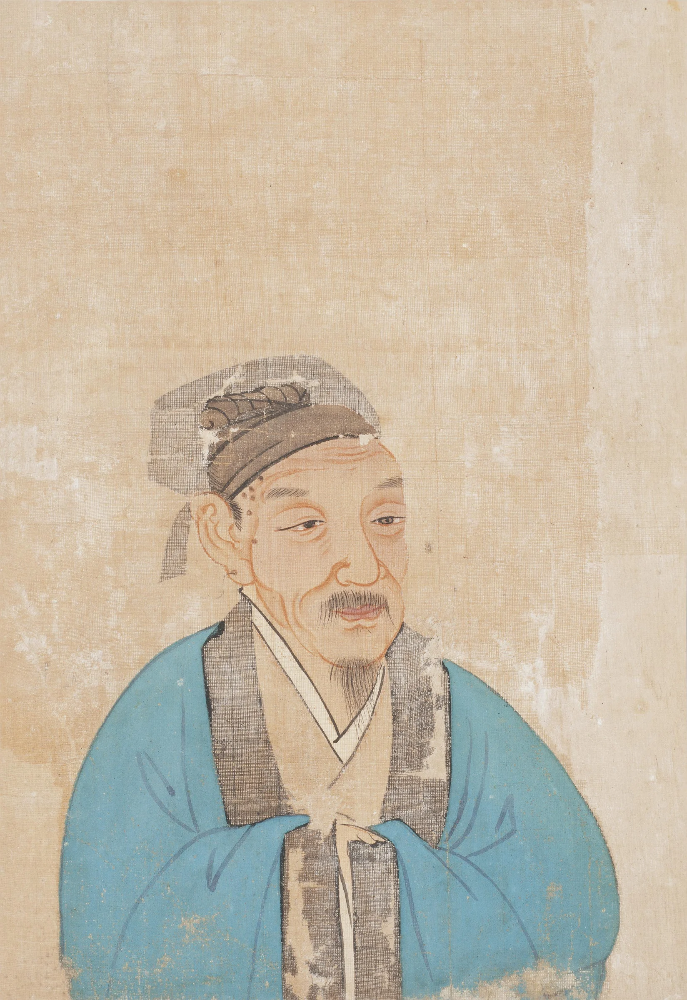
Zhu Xi (1130–1200), from the album Portraits of Famous Men, artist unknown. Philadelphia Museum of Art. Public domain, Wikimedia Commons.
Sources: Ebrey, Ch. 14, p. 234. Portrait: Philadelphia Museum of Art record via Wikimedia Commons.
Q7 · Q8 story · The study · 1400s–1500s
All Candidates Had to Write the Same Rigid "Eight-Legged" Essay
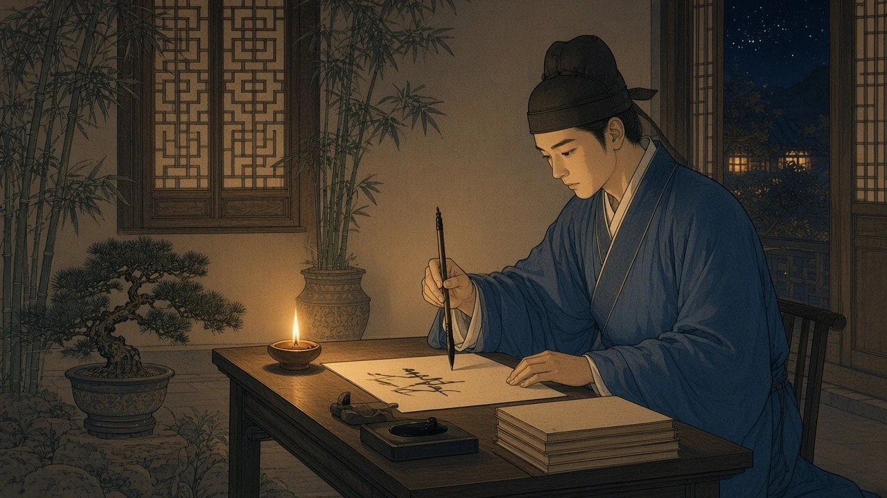
AI-generated illustration in a Ming woodblock-print style, made for this deck: a young student in a blue robe practices with an upright brush by the light of a small oil lamp at night, an inkstone and a stack of thread-bound books on his desk. An interpretation, not a historical source.
Every candidate learned to write the approved "eight-legged" style of essay.
The style built arguments by analogy and by pairing balanced statements.
Shared texts and a shared style created one exam culture across the whole empire.
Sources: Ebrey, Ch. 14, p. 234.
Q7 story · Province and capital · 1400s–1600s
Fewer Men Reached the Top Under the Ming Than Under the Song
The Ming added a new provincial screening test, so candidates had to pass more exams than before.
The Ming produced only about 89 jinshi a year.
The Southern Song had produced 135 a year, and the Jin another 149.
Sources: Ebrey, Ch. 14, pp. 235–236, including the table "Ming Examination Degrees," p. 236.
Q7 story · A family courtyard
Families Started Boys on the Classics at Age Four or Five
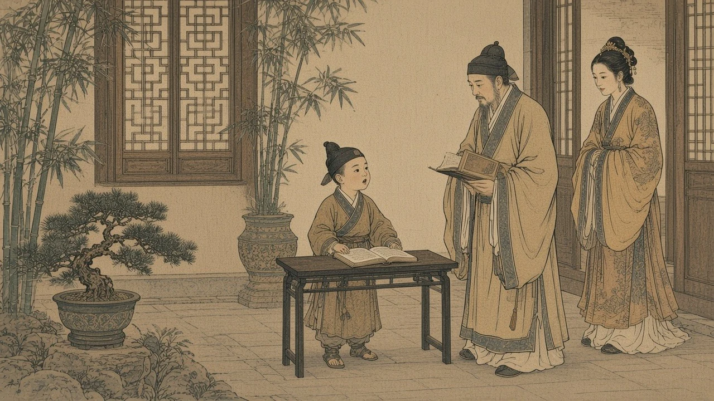
AI-generated illustration in a Ming woodblock-print style, made for this deck: a small boy stands at a low desk with an open book while a robed tutor reads to him from a book and a woman stands watching beside them, bamboo and a potted pine in the courtyard. An interpretation, not a historical source.
The exams were written in classical Chinese, a language very different from everyday speech.
Literati families who began teaching their sons young had a big advantage.
Lineages set up schools and paid for talented boys, because the whole lineage shared in their success.
Sources: Ebrey, Ch. 14, p. 236.
Q7 story · A family of doctors · 1461–1554
Exam Success Raised a Family of Doctors, and Its Daughter Became a Physician to Women
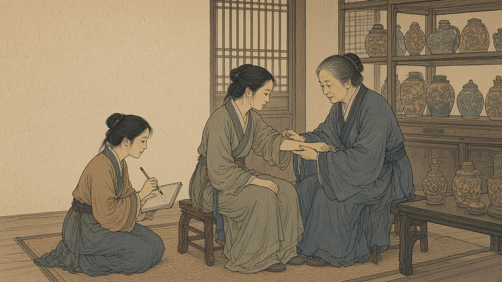
AI-generated illustration in a Ming woodblock-print style, made for this deck: an older woman physician takes the pulse at the wrist of a seated woman patient while a young woman kneels beside them taking notes, jars of medicine on the shelves. An interpretation, not a historical source.
As schools spread, families of physicians and merchants had more chances to succeed in the exams.
Tan Yunxian's grandfather married into a doctor's family, and two of his sons passed the jinshi.
Her grandparents taught her medicine; she treated only women patients and lived to ninety-three.
Sources: Ebrey, Ch. 14, pp. 236, 238 (Biography: Tan Yunxian, Woman Doctor).
Q7 story · Nanjing · 1397
When Every Winner in 1397 Was a Southerner, Taizu Executed the Examiners
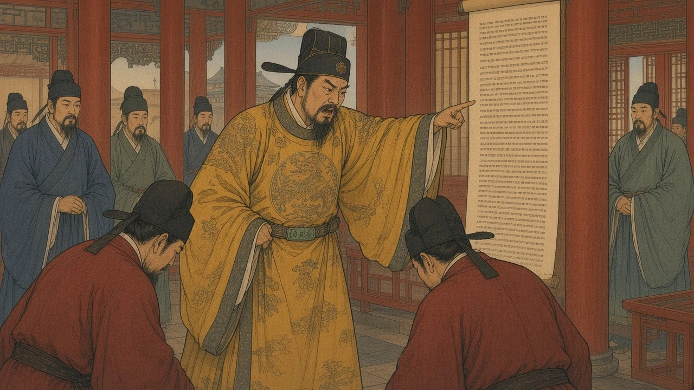
AI-generated illustration in a Ming woodblock-print style, made for this deck: an angry emperor in a yellow dragon robe and black court cap points at a long list hanging in a palace hall while two officials in red robes bow low before him and other officials look on. An interpretation, not a historical source.
The wealthy Jiangnan region produced the best-prepared candidates.
In 1397 every man who passed the palace exam was a southerner.
Taizu executed two examiners, had everyone retested, and passed only northerners.
Sources: Ebrey, Ch. 14, pp. 235–236.
Q7 story · The provinces · after 1397
Regional Quotas Kept One Region from Winning Every Place
After 1397, examiners took a candidate's home region into account.
Each province had a quota for how many candidates it could send on to the capital.
After 1427, northern candidates were guaranteed 35 percent of the places.
The provinces of Ming China under Yongle (c. 1405–1420), labels in French. Map: Michal Klajban (derivative). CC BY-SA 3.0, Wikimedia Commons.
Sources: Ebrey, Ch. 14, pp. 235–236. Map: Wikimedia Commons.
Reading Guide · Review Question 7
Reading Guide · Review Question 7
Review Question 7
Discuss the evolution and social impact of the civil service examinations during the Ming Dynasty. How did the government attempt to ensure regional balance among the scholar-official class?
A strong answer has two parts: how the exams changed and what they did to people's lives, then the specific tools the court used to balance the regions.
Portrait of Wang Yangming, attributed to Cai Shixin, Ming dynasty, hanging scroll (cropped). Shanghai Museum. Public domain, Wikimedia Commons.
Sources: Ebrey, Ch. 14, pp. 237–238. Portrait: Shanghai Museum record via Wikimedia Commons.
Q8 story · Beijing to Guizhou · 1506–1508
Wang Defended Two Officials, Was Beaten, and Was Exiled to Guizhou
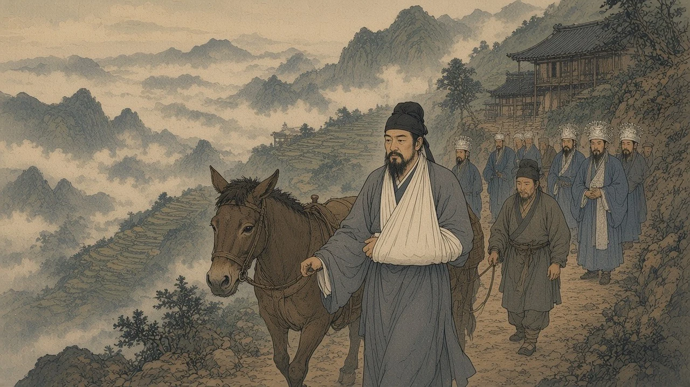
AI-generated illustration in a Ming woodblock-print style, made for this deck: a weary scholar in a gray travel robe, his arm in a white sling, leads a mule along a misty mountain path while villagers in indigo clothes and silver headdresses follow behind. An interpretation, not a historical source.
In the early 1500s the eunuch Liu Jin dominated the court.
Wang defended two officials who had criticized Liu, and he was imprisoned and severely beaten.
He was then sent to a lowly post in Guizhou, in the far southwest, where he tried to understand the Miao people.
Sources: Ebrey, Ch. 14, pp. 238–239.
Q8 story · Guizhou · early 1500s
In Guizhou Wang Decided That Moral Truth Was Already in Every Mind
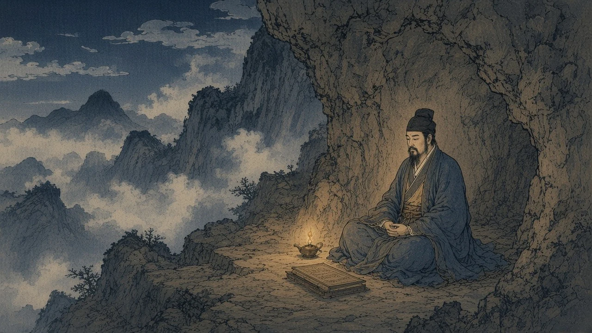
AI-generated illustration in a Ming woodblock-print style, made for this deck: a scholar sits in meditation at the mouth of a rough cave at night beside a small oil lamp and a closed book, with mist and mountain peaks beyond. An interpretation, not a historical source.
Zhu Xi had taught that people learn moral principles by carefully studying things and books.
Wang came to believe that these principles already existed in every person's mind, hidden by selfish desires.
He wrote that if even Confucius's words seemed wrong when tested in the mind, he would not accept them.
Sources: Ebrey, Ch. 14, p. 239; quotation from Wing-tsit Chan, tr., Instructions for Practical Living (1963), p. 81, quoted in Ebrey, p. 239.
Q8 story · Village and lecture hall · 1500s
Wang Taught That Ordinary People Could Become Sages
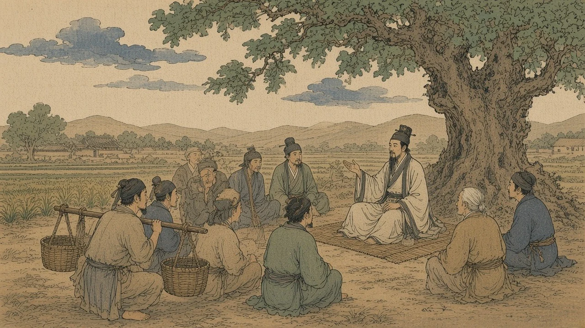
AI-generated illustration in a Ming woodblock-print style, made for this deck: a teacher in a white robe sits on a mat under a large tree speaking to a circle of farmers, among them a man with a carrying pole and baskets and an old woman. An interpretation, not a historical source.
Because every mind had the same capacity, Wang said common people could become sages too.
Books and teachers, even Confucius and Mencius, were only aids, not the source of truth.
Critics charged that his ideas were tainted by Chan (Zen) Buddhism.
Sources: Ebrey, Ch. 14, p. 239.
Q8 story · A magistrate's office · 1500s
Wang Taught That Knowing What Is Right Means Doing It
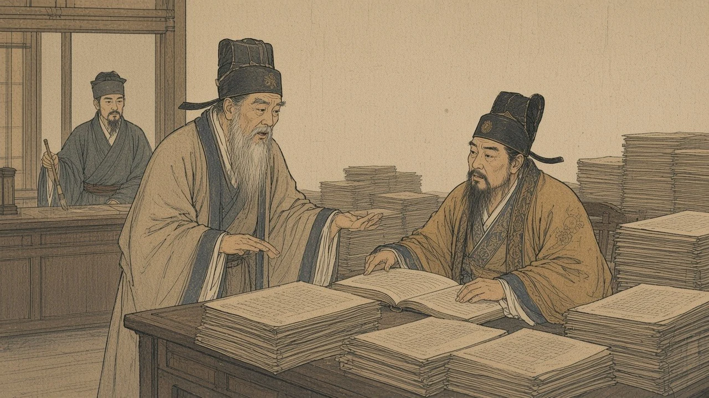
AI-generated illustration in a Ming woodblock-print style, made for this deck: a tired official sits at a desk heaped with bound files while an older white-bearded scholar beside him gestures toward an open book, a clerk standing in the background. An interpretation, not a historical source.
Wang refused to separate knowing from acting.
He said no one truly understands filial piety without practicing it, just as no one knows pain without feeling it.
He told a busy official that real learning could be found in record-keeping and legal cases.
Sources: Ebrey, Ch. 14, p. 239; quotation from Patricia Buckley Ebrey, ed., Chinese Civilization: A Sourcebook (1993), p. 258, quoted in Ebrey, p. 239.
Q8 story · Southern Jiangxi to Guangxi · 1510–1529
Wang Lived His Ideas as a Governor and General
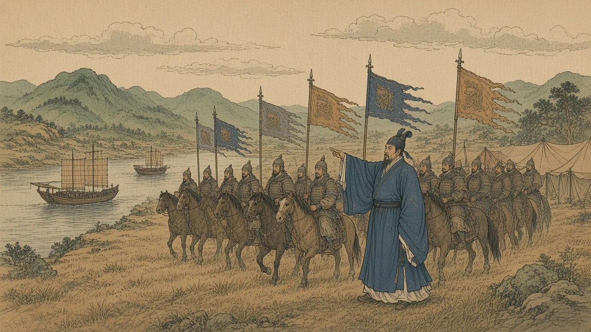
AI-generated illustration in a Ming woodblock-print style, made for this deck: a scholar-official in a long blue robe points the way as armored cavalry with banners ride past tents along a riverbank, sailing boats on the river and green hills beyond. An interpretation, not a historical source.
Conservative officials sent him away from the capital to govern a troubled military district in southern Jiangxi.
There he led armies, captured a rebel prince, and set up community compacts for local people.
He died in 1529 on his way home from campaigns in Guangxi.
Sources: Ebrey, Ch. 14, pp. 239–241.
Q8 story · The salt coast · 1500s
A Salt Worker's Son Took Wang's Ideas to the Crowds
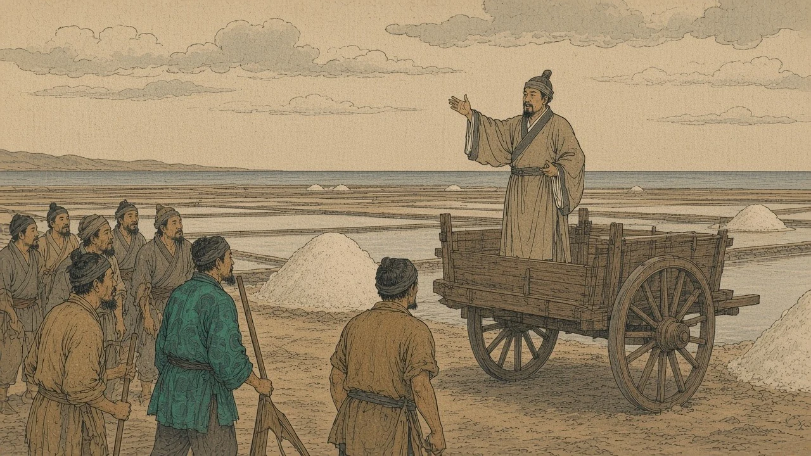
AI-generated illustration in a Ming woodblock-print style, made for this deck: a plainly dressed lecturer stands in a wooden cart speaking to a crowd of workers holding rakes beside flat salt pans and white heaps of salt by the sea. An interpretation, not a historical source.
Some of Wang's followers questioned old rankings, such as placing scholars above farmers.
Wang Gen, from a family of salt workers, gave lectures to crowds of ordinary people.
He spoke about problems in their lives and urged them to seek education to improve their lot.
Sources: Ebrey, Ch. 14, pp. 239–240.
Q8 story · Late Ming · late 1500s
Two Later Followers Attacked Old Conventions and Died in Prison
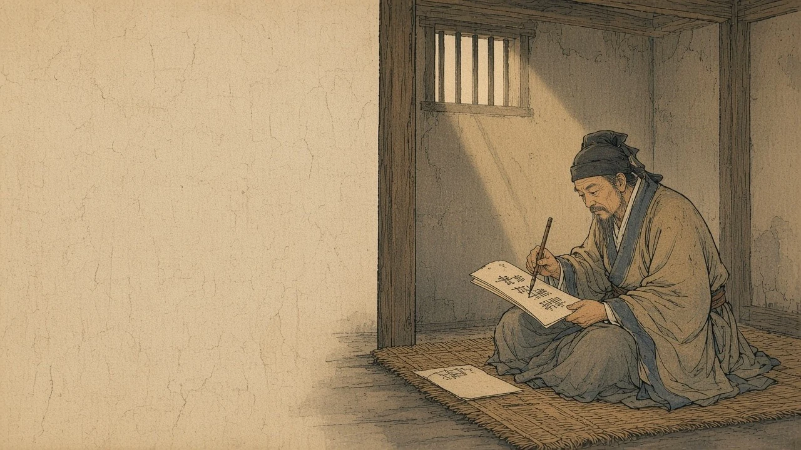
AI-generated illustration in a Ming woodblock-print style, made for this deck: a bearded scholar sits on a straw mat in a bare cell, writing on a sheet of paper in the light from a small barred window. An interpretation, not a historical source.
He Xinyin called the family selfish and said loyalty to friends ranked above loyalty to family.
Li Zhi defended feelings and passion and argued that women were men's intellectual equals and deserved fuller educations.
Both men were arrested for spreading dangerous ideas and died in prison.
Sources: Ebrey, Ch. 14, p. 240.
Reading Guide · Review Question 8
Reading Guide · Review Question 8
Review Question 8
In what ways did the philosopher Wang Yangming challenge the orthodox Neo-Confucianism of Zhu Xi, and what were the social implications of his teachings?
A strong answer first sets out what Zhu Xi taught and what Wang changed, then follows his ideas out into society through his own career and his followers.
China's Population More Than Doubled Under the Ming
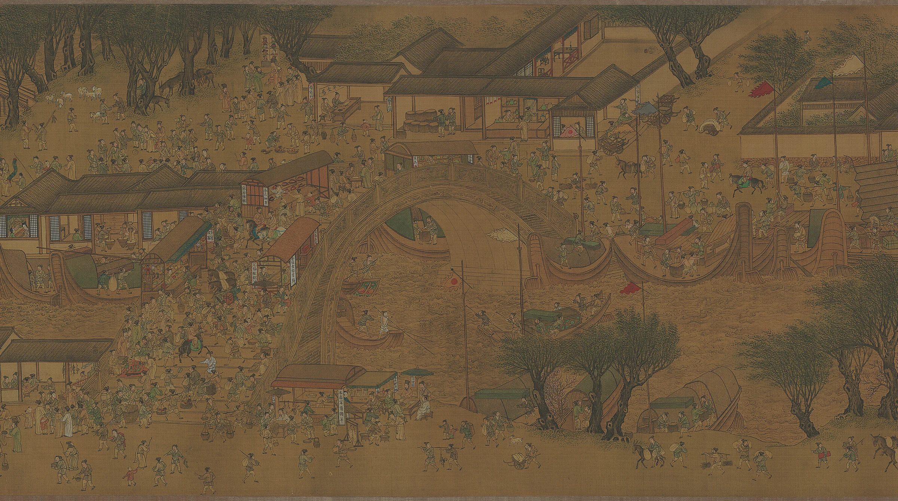
Along the River During the Qingming Festival, Ming version attributed to Qiu Ying, handscroll, detail of the arched bridge and market. Liaoning Provincial Museum. Public domain painting; photo released CC0, Wikimedia Commons.
China grew from about 60–80 million people to about 150–200 million.
Sources: Ebrey, Ch. 14, pp. 234, 240. Painting: Wikimedia Commons.
Q9 story · Yangzi delta, Fujian, Jiangxi · late 1500s
Regions Began to Specialize in Crops and Crafts for Sale
Cheap water transport let communities grow cash crops and sell them in distant markets.
The Yangzi delta became a center of cotton and silk, and coastal Fujian grew tobacco and sugar cane.
Porcelain kilns at Jingdezhen in Jiangxi province reached record levels of output.
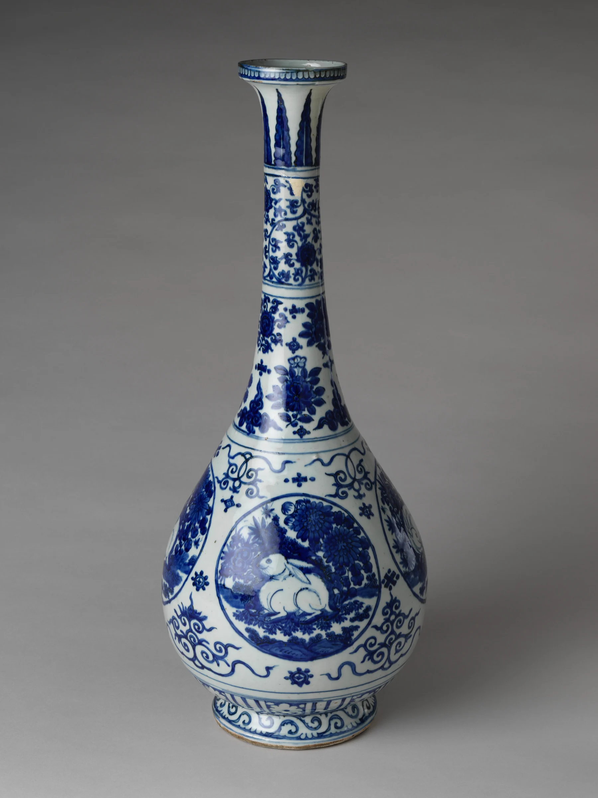
Vase with rabbits, Ming dynasty, late 16th century. Porcelain painted in underglaze cobalt blue (Jingdezhen ware). Metropolitan Museum of Art, 24.80.168. Public domain (Met Open Access), metmuseum.org.
Sources: Ebrey, Ch. 14, p. 240. Vase: Metropolitan Museum of Art, Open Access.
Q9 story · Every village · from 1381
Taizu Made Better-Off Villagers Collect Taxes Without Pay
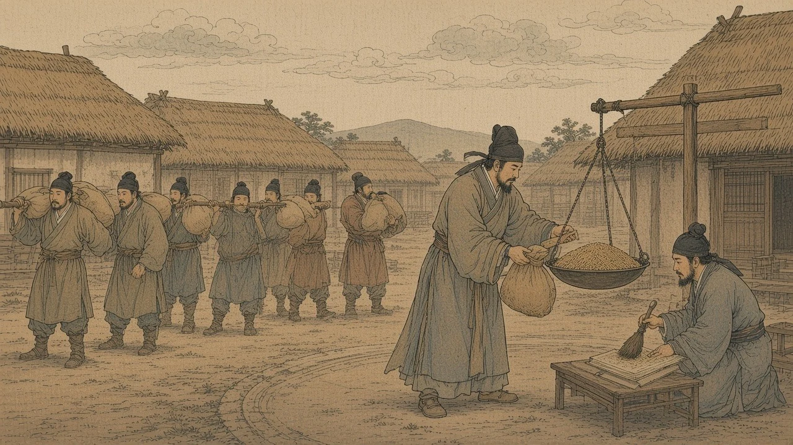
AI-generated illustration in a Ming woodblock-print style, made for this deck: a headman pours grain from a sack into the pan of a hanging balance while a clerk kneels at a low table writing, and a line of farmers waits with sacks on their shoulders between thatched houses. An interpretation, not a historical source.
Under the lijia system, better-off families in each village did police, legal, and tax-collecting work without pay.
Villagers themselves assessed, collected, and delivered the taxes, which were paid mostly in grain.
Sources: Ebrey, Ch. 14, p. 240.
Q9 story · The countryside · 1400s–1500s
The Unpaid System Created the Abuses Taizu Had Wanted to Prevent
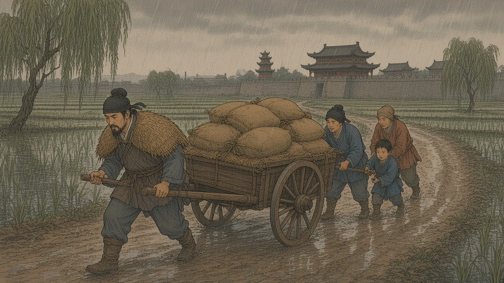
AI-generated illustration in a Ming woodblock-print style, made for this deck: a man in a straw rain cape pulls and a family pushes a heavy wooden cart loaded with grain sacks along a muddy road through rice paddies in the rain, a walled Chinese town and pagoda in the distance. An interpretation, not a historical source.
Local officials had so little legal income that they had to collect illegal fees to keep services running.
Many households were ruined by unpaid duties, such as delivering taxes or running hostels for traveling officials.
The government finally converted most of these duties into a money tax.
Sources: Ebrey, Ch. 14, p. 240.
Q9 story · South China · 1400s–1600s
Relatives Formed Lineages Around a Shared Ancestor
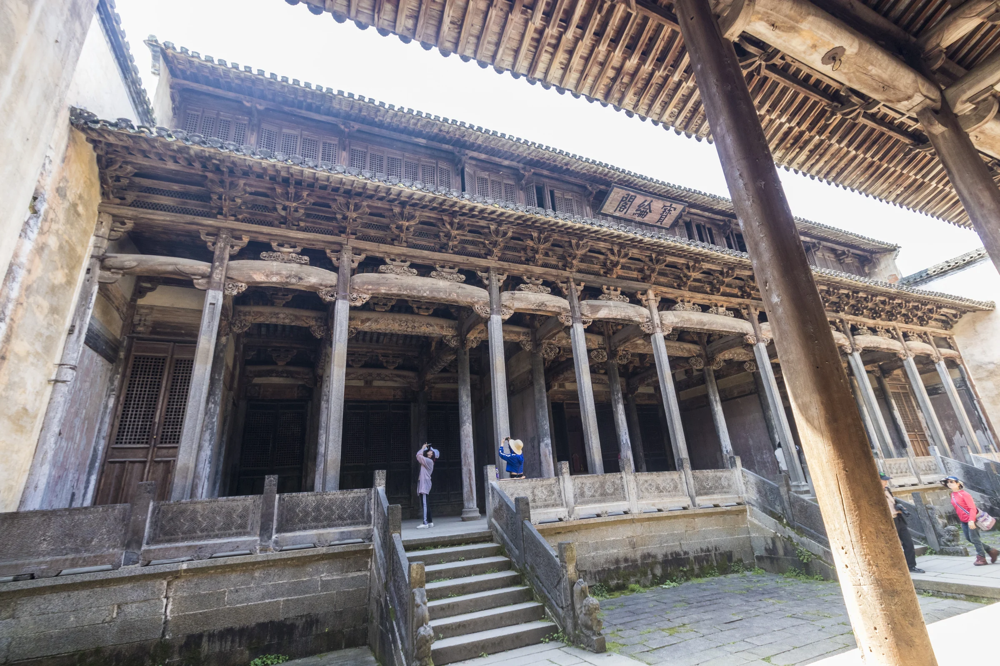
The Luo Dongshu Ancestral Hall, Chengkan village, in the old Huizhou region of Anhui. Photo: ScareCriterion12. CC BY-SA 4.0, Wikimedia Commons.
A lineage was a group of relatives descended from one ancestor who agreed to cooperate.
Lineages often owned land together to pay for ancestral rites, and sometimes for an ancestral hall or school.
Lineages were more common in the south than in the north, perhaps because of migration patterns.
Sources: Ebrey, Ch. 14, p. 240. Hall: Wikimedia Commons.
Q9 story · Fujian, Huizhou, Jiangxi, Guangdong
Lineages Grew for Different Reasons in Different Places
In Fujian, large lineages dated back to Song times, and in Huizhou they grew strong on merchant wealth.
In Jiangxi, educated men formed lineages to raise their status, while in Guangdong most took shape from the 1500s on.
Some lineages were started by educated men, and others by ordinary people who saw benefits in banding together.
Sources: Ebrey, Ch. 14, p. 240.
Q9 story · Village shrines · 1500s
Community Compacts Bound Villagers to Help and Correct One Another
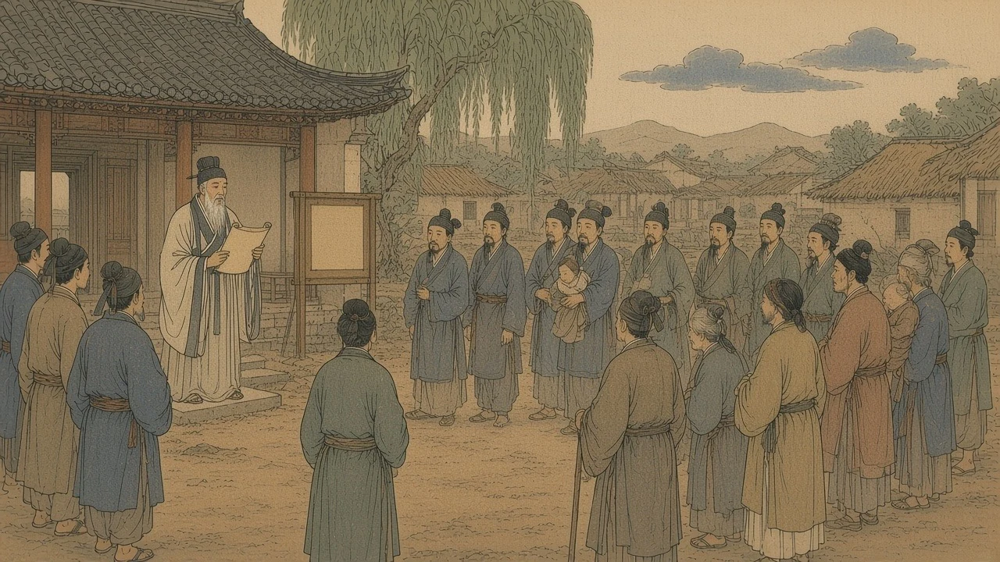
AI-generated illustration in a Ming woodblock-print style, made for this deck: a white-bearded elder in a scholar's robe reads aloud from a scroll beside a notice board while a crowd of village men and women listens, one man holding a baby. An interpretation, not a historical source.
Compact members agreed to correct each other's faults, help those in need, and expel anyone who would not cooperate.
Zhu Xi had praised compacts, and Wang Yangming used them to restore order in rebel areas.
Some lineages adopted similar written rules to discipline members and settle disputes.
Sources: Ebrey, Ch. 14, pp. 240–241.
Q9 story · Town and country · late 1500s
Scholars Feared That Society's Moral Fabric Was Unraveling
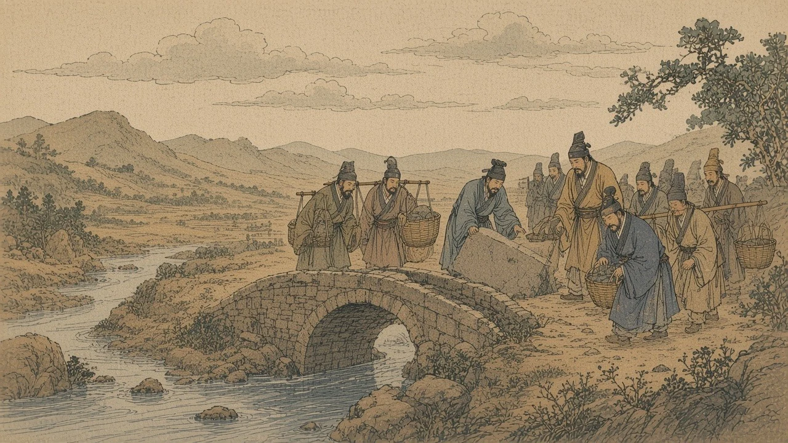
AI-generated illustration in a Ming woodblock-print style, made for this deck: gentlemen in scholars' robes and villagers with baskets on shoulder poles gather at a stone arch bridge over a stream, two men handling a large stone block. An interpretation, not a historical source.
Many complained that rich and poor no longer helped each other but saw each other as enemies.
Wang's followers urged villagers to form compacts and strive for goodness together.
Some educated men turned to charity, such as repairing roads and bridges or helping pay for funerals.
Sources: Ebrey, Ch. 14, p. 241.
Reading Guide · Review Question 9
Reading Guide · Review Question 9
Review Question 9
How did the commercialization of the economy and rapid population growth impact local social organization during the Ming period, particularly regarding the formation of lineages?
A strong answer links the economic changes to the organizations they encouraged, and shows that lineages formed for different reasons in different regions.
The Money of the Market Towns Flowed into the Cities
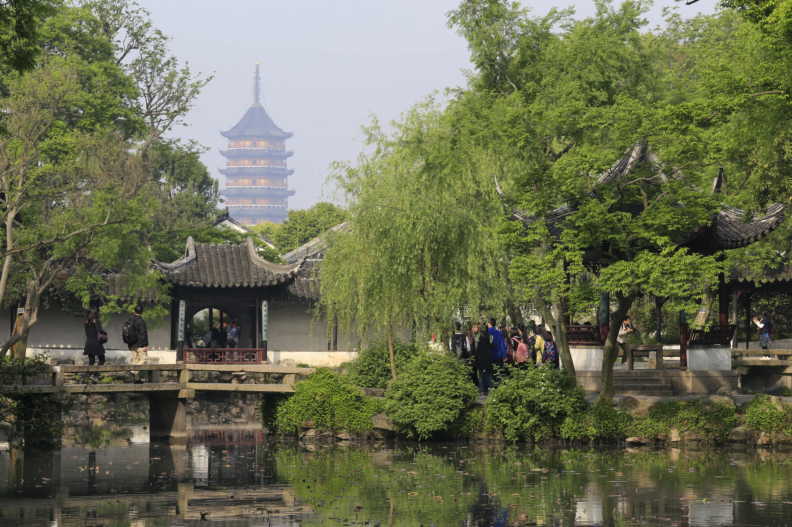
The Humble Administrator's Garden (Zhuozheng Yuan), Suzhou. Photo: Zhangzhugang, 2015. CC BY-SA 4.0, Wikimedia Commons.
Village wealth found its way into the cities.
There it paid for gardens, books, novels, and plays.
The next lecture walks through that world and then watches it fall. Open Lecture 4 ↗
Sources: Ebrey, Ch. 14, p. 241 (Material Culture: Gardens of Suzhou).
Pierian Spring · Independent Study
Today's lecture ends here. Continue on your own: the stories below finish this chapter's history.
"A little learning is a dang'rous thing; Drink deep, or taste not the Pierian spring."Alexander Pope, An Essay on Criticism, 1711
Pierian Spring · A woman doctor's casebook · c. 1511
PS: Tan Yunxian Recorded Thirty-One Patients, and Often Diagnosed Overwork
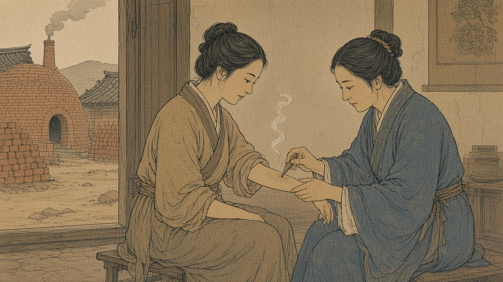
AI-generated illustration in a Ming woodblock-print style, made for this deck: a woman physician holds a smoking stick of moxa near the forearm of a seated woman patient, with a brick kiln and stacks of bricks visible through the doorway. An interpretation, not a historical source.
At fifty she wrote Sayings of a Female Doctor, describing how her grandmother taught her.
She used herbal medicines and moxibustion, which required touching the patient.
She blamed working women's illnesses on overwork, and upper-class women's on hidden emotions.
Sources: Ebrey, Ch. 14, p. 238 (Biography: Tan Yunxian, Woman Doctor), based on Charlotte Furth, A Flourishing Yin (1999).
Pierian Spring · Jiangxi and Guangxi · 1510s–1529
PS: Wang Yangming the General, from Jiangxi to Guangxi
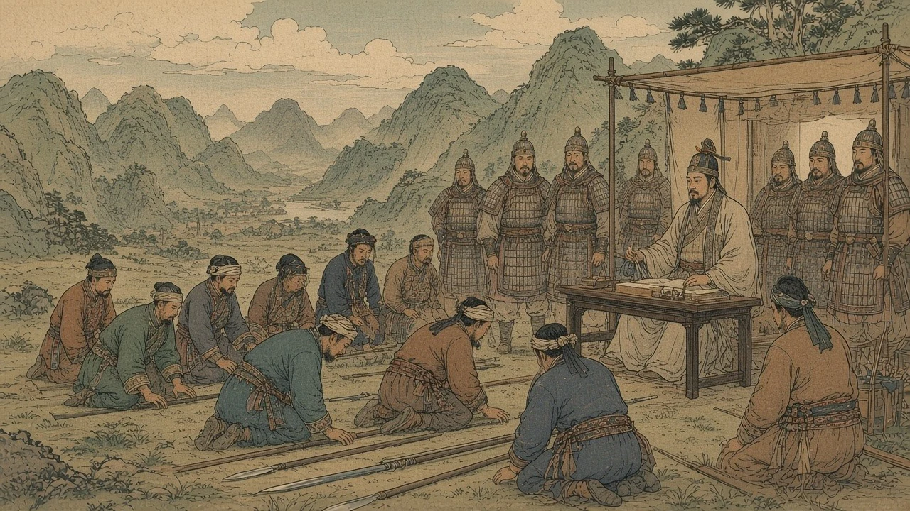
AI-generated illustration in a Ming woodblock-print style, made for this deck: a scholar-official seated at a table under a canopy receives kneeling local men in headcloths who lay their spears on the ground, armored soldiers standing behind him. An interpretation, not a historical source.
Wang governed a district with many non-Chinese peoples.
He captured a rebel prince.
In 1527 he was recalled to put down uprisings in Guangxi.
Sources: Ebrey, Ch. 14, p. 239.
Pierian Spring · A late-Ming town · c. 1600
PS: The Society for Sharing Goodness Paid Monthly Dues for Good Works
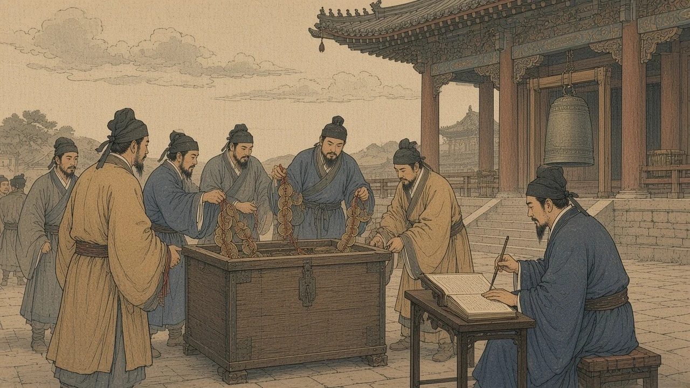
AI-generated illustration in a Ming woodblock-print style, made for this deck: men in scholars' and merchants' robes place strings of coins in a large wooden chest at a temple with a great bronze bell while a seated treasurer writes in a ledger. An interpretation, not a historical source.
Around 1600 one man founded a society whose members paid monthly dues.
The money repaired roads and bridges.
It also helped families who could not afford funerals.
Sources: Ebrey, Ch. 14, p. 241.
Sources and image credits
The Stories in This Deck Rest on These Sources
Textbook
Patricia Buckley Ebrey et al., course textbook, Chapter 14, "The Ming Empire in China (1368–1644)," pp. 234–241, including the table "Ming Examination Degrees" (p. 236), Biography: Tan Yunxian, Woman Doctor (p. 238) and Material Culture: Gardens of Suzhou (p. 241).
Quotations of Wang Yangming as given in the textbook (p. 239), from Wing-tsit Chan, tr., Instructions for Practical Living and Other Neo-Confucian Writings (1963), p. 81, and Patricia Buckley Ebrey, ed., Chinese Civilization: A Sourcebook, rev. ed. (1993), p. 258.
Further reading beyond Ebrey
Recap on slide nn: "China's Examination Hell: Video Lecture" (Steven Austin, 2013), shown earlier in the semester, https://www.youtube.com/watch?v=DH5486n9lfs.
Museum and Wikimedia Commons records for the images below (attributions, dates, locations).
"罗东舒祠" (Luo Dongshu Ancestral Hall), Chinese Wikipedia, for the hall's construction dates.
The Cambridge History of China, vol. 7 (1988), pp. 178–179, and vol. 8 (1998), pp. 4, 40, 469; Dictionary of Ming Biography (1976), "Wang Shou-jen"; John W. Dardess, A Ming Society (1996); David Faure, Emperor and Ancestor (2007).
Benjamin A. Elman, A Cultural History of Civil Examinations in Late Imperial China (2000); Timothy Brook, The Confusions of Pleasure: Commerce and Culture in Ming China (1998); Ho Ping-ti, The Ladder of Success in Imperial China (1962).
Images (real)
Slide a: Examination Hall with 7,500 cells, Canton, 1873, photographer unknown, restored by ralph repo. CC BY 2.0, Wikimedia Commons.
Slide b: Portrait of an Elderly Unidentified Civil Official, late 16th c., Freer Gallery of Art. Public domain, Wikimedia Commons.
Slide c: Zhu Xi, Portraits of Famous Men, Philadelphia Museum of Art. Public domain, Wikimedia Commons.
Slide nn: Examination cells, Jiangnan Gongyuan, Nanjing. Photo: Dr. Meierhofer. CC BY-SA 3.0, Wikimedia Commons.
Slide f: degree diagram made for this deck from the textbook table.
Slide m: Ming provinces under Yongle, Michal Klajban (derivative). CC BY-SA 3.0, Wikimedia Commons.
Slide o: Portrait of Wang Yangming, attributed to Cai Shixin, Shanghai Museum. Public domain, Wikimedia Commons.
Slide x: Along the River During the Qingming Festival, attributed to Qiu Ying, Liaoning Provincial Museum (detail). Public domain; photo CC0, Wikimedia Commons.
Slide y: Vase with rabbits, Jingdezhen ware, Metropolitan Museum of Art 24.80.168. Public domain (Open Access).
Slide bb: Luo Dongshu Ancestral Hall, Chengkan. Photo: ScareCriterion12. CC BY-SA 4.0, Wikimedia Commons.
Slide cc: lineage diagram made for this deck from the textbook.
Scene illustrations planned for slides d, j, k, l, p, q, r, s, t, u, v, z, aa, dd, ee, ii, kk and ll are AI-generated interpretations made for this deck. They are not historical sources.
×
Orthodox
Orthodox means officially approved as the correct teaching. In the Ming, Zhu Xi's interpretations of the Four Books were the standard for the civil service examinations (Ebrey, pp. 234, 237).
×
Quota
A quota is a fixed number. Each Ming province could send only a set number of candidates on to the capital examinations, and after 1427 northerners were guaranteed 35 percent of the places (Ebrey, pp. 235–236).
×
Chan Buddhism
Chan (Zen in Japanese) is a school of Buddhism that stresses meditation and sudden insight into one's own mind rather than study of texts. Wang's critics thought his focus on the mind sounded too much like Chan (Ebrey, p. 239).
×
Community compact
A community compact was a voluntary village agreement. Members promised to correct each other's faults, help those in need, and expel anyone who would not cooperate. Wang used compacts in his program to pacify rebel areas (Ebrey, pp. 240–241). Slide dd returns to them.
×
Cash crops
Cash crops are grown to be sold for money rather than eaten by the farm family, such as cotton, tobacco and sugar cane (Ebrey, p. 240).
×
Lijia
The lijia (lee-jya) system was Taizu's plan for village administration. Better-off families did unpaid police, legal and tax-collecting work, so villagers, not officials' underlings, collected the taxes (Ebrey, p. 240).
×
Lineage
A lineage was a group of relatives descended from one ancestor and organized to cooperate: holding land in common, performing ancestral rites, and sometimes running a school (Ebrey, p. 240).
×
Moxibustion
Moxibustion means burning moxa (dried artemisia) at chosen points on the body. The theory was similar to acupuncture: it stimulated the circulation of qi (Ebrey, p. 238).